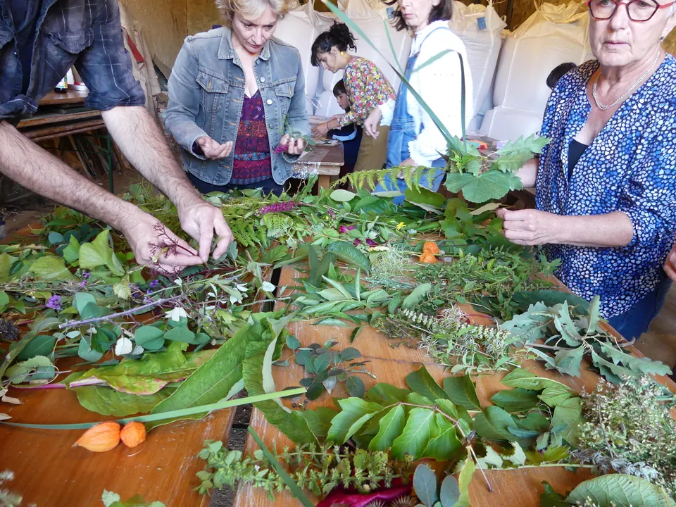
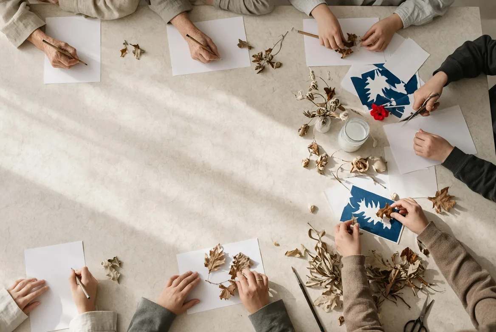
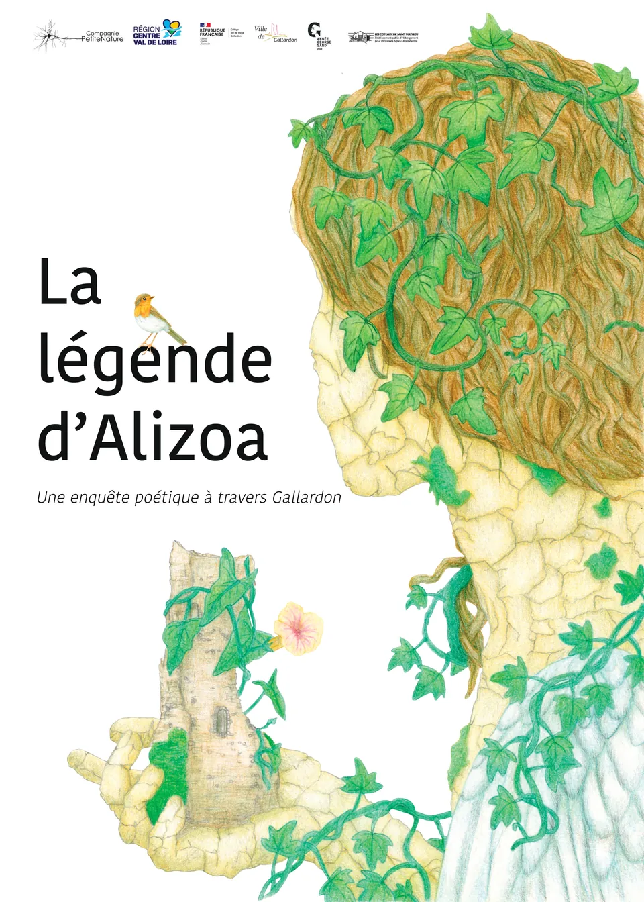
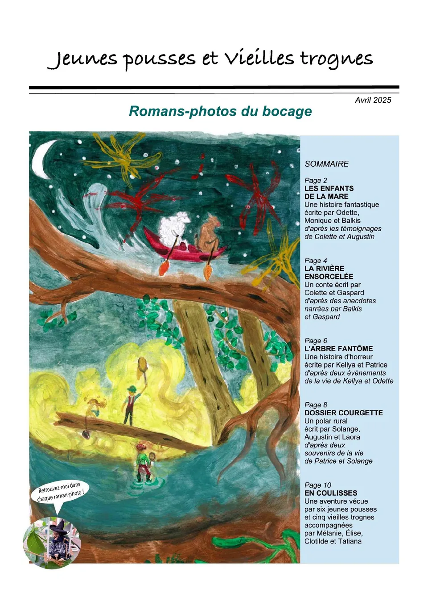
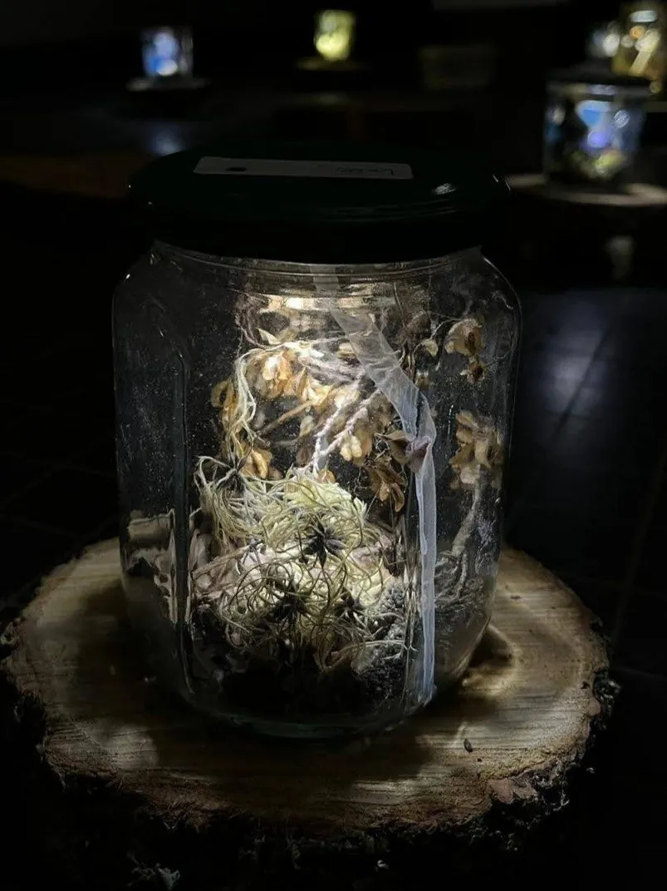

(Une table de travail. Des végétaux, des mots. Attrapez-en un.)
Labos
La compagnie conçoit des projets où la littérature devient une expérience collective.

(Là où la littérature ne va pas toujours.)

Menées dans des établissements scolaires, des hôpitaux, des EHPAD, des foyers de vie, des prisons ou des lieux de patrimoine, ces propositions donnent lieu à des créations réalisées avec les participants.
Dire
Ces projets explorent la lecture à voix haute comme une expérience collective de la littérature.


Écrire
Ces projets explorent l’écriture comme espace d’invention, de partage et de création collective.


À travers les feuilles, enquête poétique avec George Sand
Projet intergénérationnel, Gallardon
Création d’un livret illustré
Jeunes pousses & vieilles trognes
Projet intergénérationnel, Abbaye de Noirlac
Création d’un roman-photo
Un paysage à soi
4 classes de 6e, Bourges
Installations poétiques exposées dans le collègeImaginer
Ces projets explorent l’imaginaire collectif à travers des expériences sensibles autour de la littérature.


À vous
Imaginer un labo avec la compagnie
Médiathèque, établissement scolaire, musée, festival, lieu de soin ou entreprise : décrivez votre projet en quatre étapes pour préparer une proposition avec la compagnie.